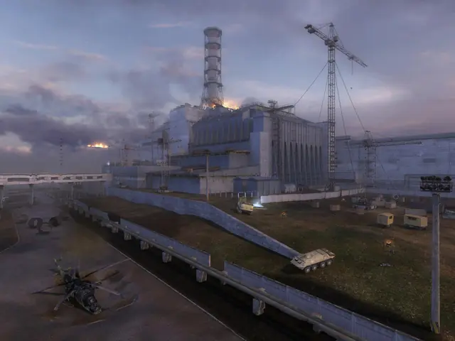
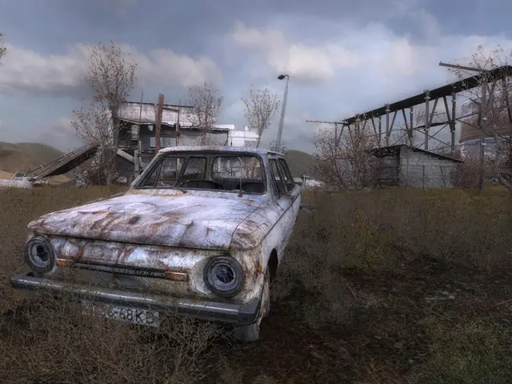
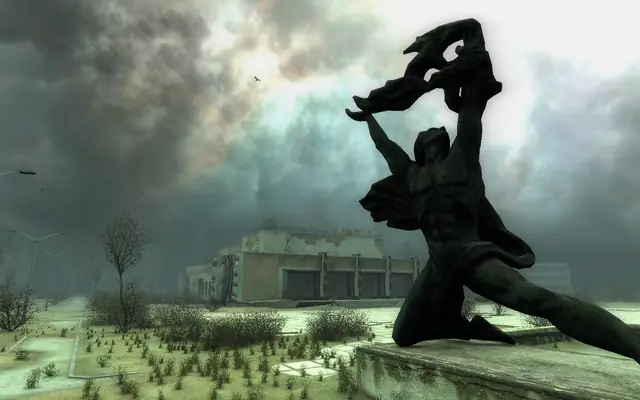
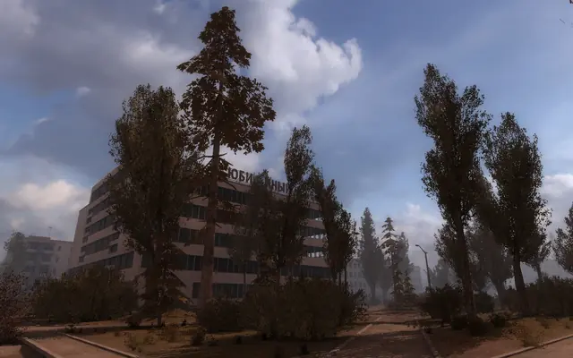
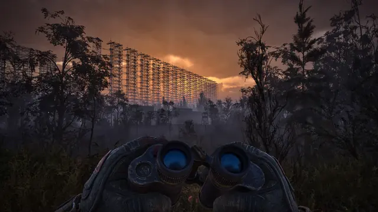
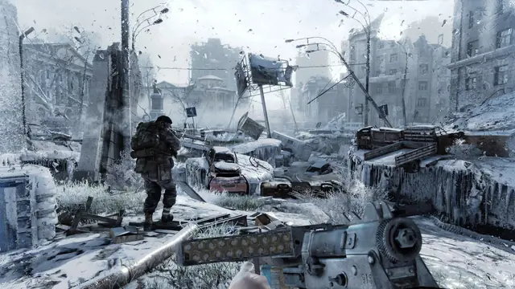
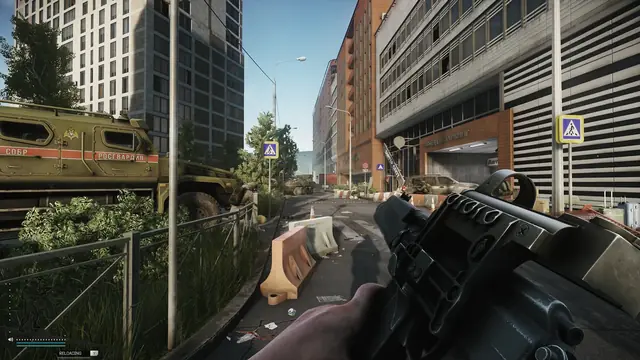
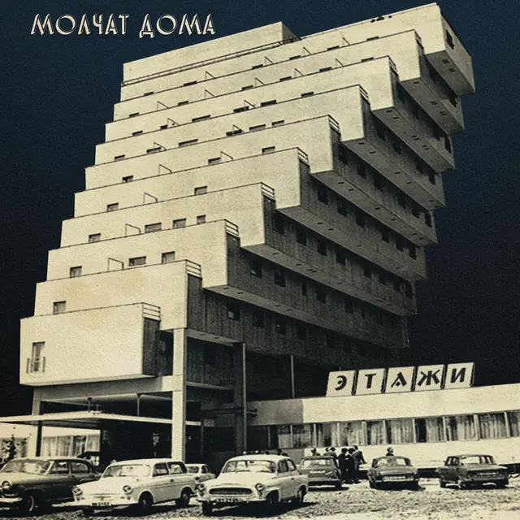
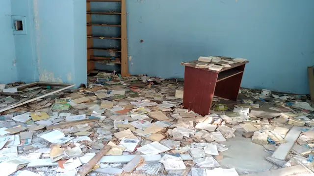

The feel
Post-Soviet decay starts with the khrushchyovka, one of the prefab complexes synonymous with mass housing in the USSR,1 repeated until whole areas the size of small towns are made of the same module.2 In It's Winter, which Ilia Mazo calls "post-Soviet sad 3D", the playgrounds, stairwells and shopfronts are each more derelict than the last, and the odd sign of a person, such as a lit sparkler in the snow, is eerie.1 Its nostalgia is ambiguous, both happy and sad.3
GSC Game World built S.T.A.L.K.E.R.'s environments from more than 1,000 photographs taken on two trips to Chernobyl, and its textures are copies of the buildings there.4 In the real Pripyat, small juxtapositions become unbearably poignant: children's toys on the decaying remains of a merry-go-round, broken strip lights in a supermarket, socialist icons left in the palace of culture.5 For the series Chernobyl, the production designer Luke Hull wanted something visually striking that was also "in a way ugly": clashing patterns, jarring colours, cheap materials and textured glass.6
- overcast
- damp
- lived-in
- melancholy
- repaired
- irradiated
Where it comes from
In 1958, seven experimental blocks in Moscow's Novye Cheryomushki each tried a different prefabricated system, usually concrete panels slotted together like toy building blocks, and by 1991 industrialised housing made up 75% of all Soviet housing stock.7 When the free market arrived in the early 1990s, a property boom took over Russia's three or four biggest cities, and everywhere else went into grim decline.7 Andrei Tarkovsky shot Stalker (1979) in and around Tallinn, among abandoned power plants, and its damp, verdant Zone went on to influence a whole sub-genre of dystopian films.8 GSC Game World, whose office was 100 km from the Chernobyl plant, drew on the film, on the Strugatskys' novel Roadside Picnic and on research trips to the Zone for S.T.A.L.K.E.R.: Shadow of Chernobyl, first released in 2007.4
Core elements
Mass-produced blocks
Walter Gropius wanted houses to be machine-made serial products, as cheap and essentially disposable as cars, and the USSR realised the dream.2 Standard blocks were identical in layout, height and flat size across a federation several times the size of the EU, and the most widely produced type, the 1-464, is a grey five-storey block of walk-up flats with balconies and a shallow pitched roof.2
Two-tone stairwells
Soviet stair landings were strikingly alike: the lower half of the wall painted blue or green up to an imagined horizon line, the upper half whitewashed.9 The painter Pavel Otdelnov calls the palette an unmistakable marker of public space, and remembers floor tiles laid in a simple yet strangely disordered pattern.9
Layered paint and wallpaper
Behind the grey concrete panels, walls kept their history: coat upon coat of ageing paint, polka-dot kitchen walls, and bright flowery 1970s wallpaper over layers of Pravda and other newspapers, put up to weatherproof the walls.10 Where the paper tears, Pravda peeks out.10
Decaying Soviet mosaics
Identical blocks were sometimes lifted by decorative mosaic panels on revolutionary, scientific, heroic and historical themes.2 In Ukraine such mosaics turn up on universities, flats and rural bus stops, and many are left to decay until they have to be removed.11
Abandoned and looted interiors
In Pripyat the decay is not nature's doing but two decades of systematic looting, after residents were forced to leave all their belongings behind when the town was evacuated.5 What is left is inexplicable: rusted hat stands alone in a decaying room, a gas mask in the hospital grounds.5
Ruins in overgrown greenery
Tarkovsky's Zone shows only human relics, debris already consumed and reclaimed by the natural landscape,8 and today it is hard to imagine it as anything but damp and verdant.8 Among the blocks of Moscow's Belyayevo, the green spaces, with their schools, ponds and park benches, are the saving grace.7
How to do it
Photograph a real place
GSC took more than 1,000 photographs on two visits to Chernobyl, and over 60 percent of S.T.A.L.K.E.R.'s Zone is an authentic model of the real one.4 Mikhail Beresten gathered his own old photos, apartment adverts and public photo collections before building a Russian flat for his game Relieve,12 and Ilia Mazo's block in It's Winter is a clone of a friend's home in Petrozavodsk.1
Block out a real floor plan
Start from a common post-Soviet layout and bend it for play: Beresten enlarged the rooms and gave one of them two doors to make the flat easier to move through.12 A khrushchyovka has ceilings about 2.5 m high, a kitchen of 4.5 to 6 m², the bath and toilet in one room, and pass-through rooms in the larger flats.13
Build a kit from trim sheets
Beresten textured almost every piece of furniture from trim sheets such as varnished wood, painted wood and a kitchen material.12 His walls are modules with tileable textures, and he blended dirt into them with vertex painting, giving the meshes a grid-like topology so there are enough vertices to paint.12 A shader that shifts the albedo's saturation, brightness and contrast sorts the furniture into Soviet and modern.12
Add rust streaks
Make streaks of rust that flow downward, as gravity and water runoff would, and keep them as a black and white mask over the paint.14 Build the mask from baked position, curvature and ambient occlusion maps, then set how long the streaks run and which axis they run along.14
Light the rooms
For dread, the crew of Chernobyl used fluorescent lamps and avoided bulbs and shades, which could make a room look cosy or nostalgic.6 For nostalgia, Beresten lit his flat only from the windows, with light portals in the windows and doorways and volumetric fog for dust in the air.12 In It's Winter, the light, or more often the lack of it, makes the mood.3
Date the rooms with props
Beresten told the player his flat is in the present, not Soviet times, with modern appliances, their boxes and an abundance of wires.12 For Chernobyl, Victorian-looking telephones and hospital equipment showed a Soviet Union stuck in the past, and medical and military props came from private collectors and museums.6
Cheat sheet
- Block
- 1-464: grey, five storeys, walk-up, balconies, shallow pitched roof2
- Ceiling
- About 2.5 m in a khrushchyovka13
- Kitchen
- 4.5 to 6 m², bath and toilet in one room13
- Stairwell
- Blue or green lower half, whitewash above9
- Walls
- Coat upon coat of paint, 1970s wallpaper over newspaper10
- Rust
- A downward streak mask from baked position, curvature and AO14
- Ornament
- Mosaics on revolutionary, scientific, heroic and historical themes2
Do
- Work from photographs of a real place, as GSC did with more than 1,000 taken at Chernobyl.4
- Leave people's things behind: toys on a merry-go-round, a gas mask in the hospital grounds.5
- Layer the walls: paint over paint, wallpaper over newspaper.10
- Mix in the present. Modern appliances, their boxes and plenty of wires keep a flat from reading as Soviet times.12
Avoid
- Making fun of a real disaster. GSC say they were very careful not to make fun of the accident or the deaths it caused.4
- A Mad Max wasteland. ATOM RPG's team didn't want that, and filled its small towns with tired-looking people and once-proud relics of the Communist regime.15
- Hammers and sickles on everything. Since 2015 Ukraine has removed much of the most obvious communist symbolism; at one Kyiv metro station, only the hammer was taken off a mosaic.11
- Cosy bulbs and shades when you want dread. Chernobyl's crew avoided them for that reason.6
- Blaming the damage on time and weather. In Pripyat, much of it is two decades of looting.5
Tools and tutorials
- How to create a paint peeling effect in Substance Painter
Layered paint that chips to show the coat beneath.
- Decal actors in Unreal Engine
Rust runs, damp and soot laid over a modular kit without new textures.
- Post-Soviet World environment
A short walkthrough of a post-Soviet district built in Unreal and Unity.
- Designing a Post-Soviet Apartment for a UE4 Game
Mikhail Beresten's flat, from trim sheets and vertex-painted dirt to light from the windows only.
- Dripping Rust
A generator for rust streaks that run downward, as a mask.
Palette
Sampled from Pripyat in S.T.A.L.K.E.R., a stairwell photo and ATOM RPG's mosaic.
Feel the vibe
Listen
For the walk home through an empty town. Notice what it does to the place.
YouTubePost-punk from working-class Minsk, with a poem by Boris Ryzhy for lyrics, over a drum machine, synths and a baritone voice.16
YouTubeListen to how much quiet it leaves between the notes.
YouTubeDoroga means road. Play it over a long walk between dead towns.
YouTubeFrom Stalker (1979). Artemyev's soundtrack accompanies the hypnotic tracking shot where the film switches from sepia to colour.8
YouTube
More references









Games
- S.T.A.L.K.E.R.: Shadow of Chernobyl
The foundation. Over 60 percent of its Zone is an authentic model of the real one, from the sarcophagus to Pripyat and the Red Forest.4
- S.T.A.L.K.E.R.: Call of Pripyat
Back in Pripyat. Compare its blocks and interiors with photographs of the real town.
- Metro 2033
Study the frozen surface and the lived-in stations below.
- ATOM RPG
Seen from above: small towns full of tired-looking people, and streets lined with once-proud relics of the Communist regime.15
- It's Winter
A khrushchyovka on a winter night, with nothing to do but look around. Its maker calls it "post-Soviet sad 3D".1
- Tiny Bunny
Study how drawn backgrounds carry snow, darkness and dread.
- S.T.A.L.K.E.R. 2: Heart of Chornobyl
The Zone again. Look at the interiors and their paint.
Film, art and more
- Stalker
Shot in and around Tallinn, among abandoned power plants. Its Zone shows only human relics, reclaimed by the landscape.8
- Roadside Picnic
The Strugatskys' novel behind both the film and the games.8,4
- Chernobyl
Luke Hull's sets: fluorescent light, cheap materials, and props from private collectors and museums.6
- Khrushchyovka
The five-storey block of the late 1950s, with ceilings about 2.5 m high and kitchens of 4.5 to 6 m².13 Learn its parts.
- Molchat Doma
Post-punk and cold wave from working-class Minsk. The name means Houses are Silent.16 Study the album covers.
Sources
- 1This 'Post-Soviet Sad 3D' Game Is Not About Having Fun
- 2Towards a Typology of Mass Housing in the USSR
- 3«Mops blocking the way»: walking simulators, playful nostalgia, and the aesthetics of unresolved authoritarian pasts in online gaming communities
- 4S.T.A.L.K.E.R.: Shadow of Chernobyl Designer Diary #1
- 5Petrified ruin: exploring the abandoned city of Pripyat
- 6Inside ‘Chernobyl:’ how the TV show’s atmospheric sets were created
- 7Radical suburbs: the secret history of Moscow’s mass housing experiment
- 8Stalker: in search of Tarkovsky’s Soviet sci-fi locations
- 9Pavel Otdelnov, Landing, 2024
- 10Soviet Innerness: a look into the Soviet everyday through abandoned innerness
- 11In a bid to save Soviet-era art, Kiev activists preserve a slice of history
- 12Designing a Post-Soviet Apartment for a UE4 Game
- 13Urban Development and Residential Architecture
- 14Dripping Rust
- 15Back to the wasteland: the post-apocalyptic, isometric RPG returns
- 16Molchat Doma: The Best Band You've Never Heard Of